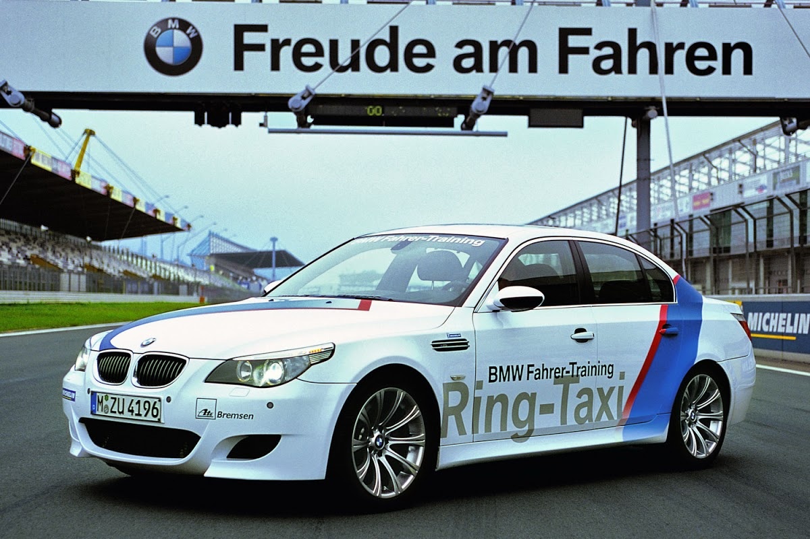

The E60 M5 was introduced in 2004, with a V10 engine and 7-speed paddle-shift SMG (Sequential Manual Gearbox) transmission linking the car with the BMW Sauber Formula One program.[47][48] The E60 M5 was the world's first production sedan to use a V10 gasoline engine. This generation of the M5 was also built in the E61 Touring (wagon) body style, which was only sold in Europe. The E63/E64 M6 coupé and convertible are based on a shortened version of the M5 chassis and largely use the same mechanical components. Sedan- rear 3/4 view Wagon- front 1/4 view The official 0 to 100 km/h (62 mph) acceleration figure is 4.7 seconds for the sedan,[49] however magazine tests have recorded figures down to 4.1 seconds.[50] The E60 M5 was the fastest 4-door sedan available at the time of its introduction;[51] top speed is electronically restricted to 250 km/h (155 mph)[49] but could be raised to 305 km/h (190 mph) with the optional M-driver's package.[52] The M5 has recorded a Nürburgring lap time of 8:13.[53][54] Upgrades over regular 5 Series models include a wider track, unique body panels, a colourful heads up display featuring navigation, control messages, speed, rpm and gear selection information, automated seat side bolsters, heated/ventilated seats and power rear curtain. The larger, flared front guards on either side also featured cooling vents, reminiscent of the 1970s BMW CSL. The wheels were of 19-inch diameter and the car has quad exhaust pipes at the rear.
 official bmw website
download best v10
official bmw website
download best v10